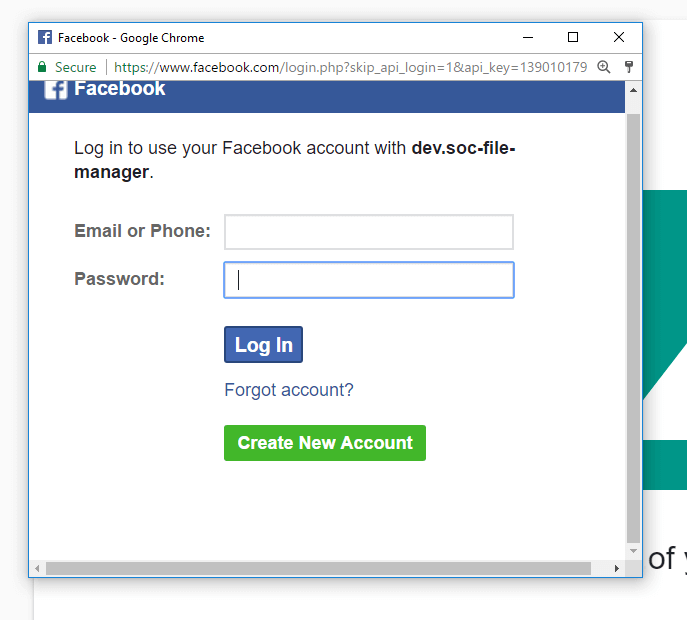

In order to use the capabilities of the service, you must log in at least one of the accounts of your social network.
Login occurs when you click on the social network icon in the upper left corner of the page.
When you click on the button, you should see the popup in a new window, in which you allow the application to use your social network account to perform actions (in this case, viewing your albums, viewing your groups and uploading photos to these albums).
When confirming the login, instead of the icon of the social network, your avatar should appear.
When unloading, firstly you need to choose where you want to upload photos. To do this, you must click on the source button on the unloading page.
A sidebar appears in which you will see a tree with your social networks\groups\albums (if you logged in at least one network)
With a simple double-click, select the album you will upload. When finished, the album name should be displayed in place of the button.
The process is very similar to the previous paragraph, the only refinement, the sidebar will appear not to the left, but from the right.
Attention! Uploading to VK albums is currently not available for technical reasons, we are working on this problem.
At the moment, the unload settings are extremely simple, you select from\to range of photos you want to upload and save or not the description from the source.
Just click on the last button. There should be a short notification from below, and the active upload counter will increase.
If you go to the next tab page, you can watch the unload process and to some extent manage it, for example the pause button will suspend the upload and the stop button will completely remove the upload from the page
Attention! If you started unloading and after some time stopped it, the photos that were unloaded will NOT be deleted.
Attention! If you close applications during unloading, all current uploads will be interrupted and will not be restored.